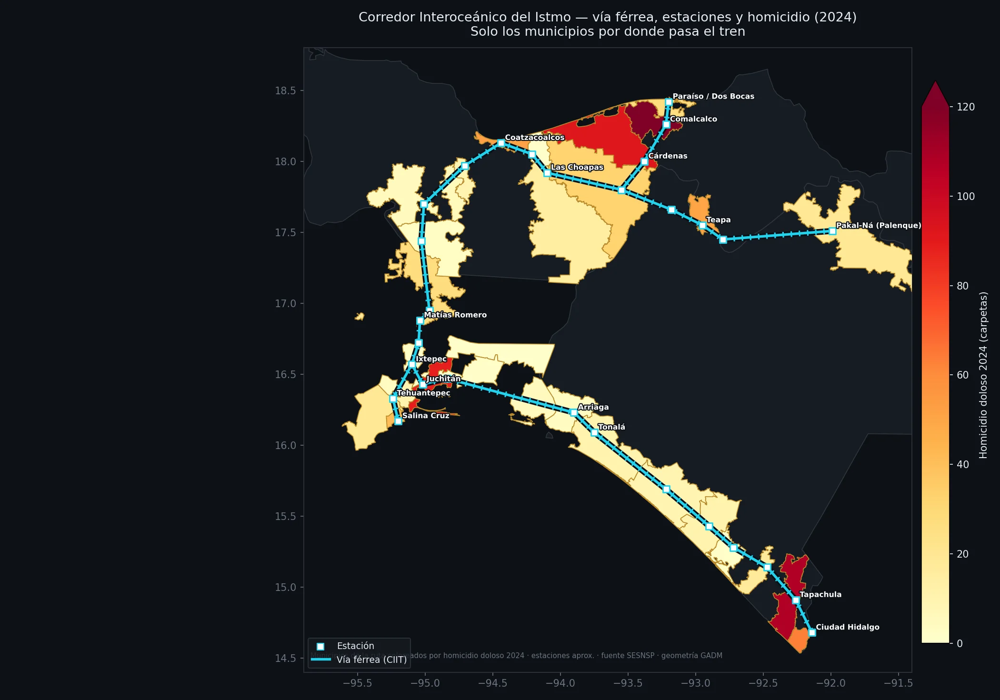

Expedientes 45
Cada expediente es una investigación de datos con fuentes oficiales, metodología publicada y cifras trazables. Lo que el archivo selectivo esconde, el expediente lo concentra.

Corredores del sureste: Istmo y Tren Maya
Mapa interactivo de los dos megaproyectos ferroviarios, leídos por su firma delictiva completa. El Istmo se pelea a tiros (homicidio +71.5%, el delito total a la baja); el Tren Maya ya factura (extorsión +48%, narco +86%). Dos firmas, dos plazas.
Inseguridad México
Los 32 estados, delito por delito: catálogo completo SESNSP, señales de reclasificación y desapariciones.
Inseguridad Morelos
El estado bajo el microscopio: 36 municipios, columnas firmadas y comunicados oficiales auditados.
Hantavirus
El expediente sanitario: seguimiento del brote, cifras oficiales y lo que las autoridades no informaron a tiempo.
Transparencia Morelos
Finanzas públicas municipales bajo auditoría ciudadana: Cuautla, Ayala y el ejercicio del gasto.
Columnas
La lectura firmada y los comunicados oficiales auditados: el marco teórico y la pinza anuncio-vs-archivo de todos los expedientes.